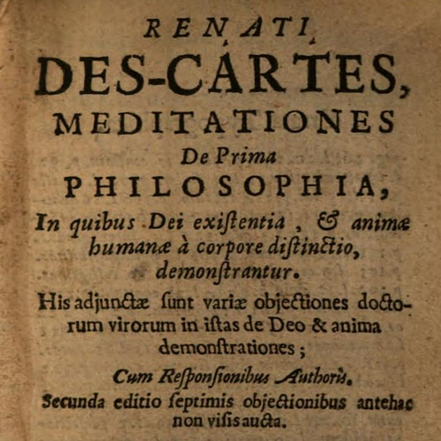

Second Meditation
Thu., Jan. 22
In this class, we finally discuss the First Meditation, entitled “What can be called into doubt”. In his Synopsis, Descartes writes that this Meditation provides two benefits: freeing us from our old preconceived opinions and helping our mind withdraw from the senses. Ultimately this method of doubt will lead us to findings that are incapable of doubt and absolutely certain.
We then go on to discuss the Second Meditation, entitled “The nature of the human mind, and how it is better known than the body”. Here Descartes discovers a first item of absolutely certain knowledge: the existence of himself as a thinking thing. When it comes to his own nature, anything corporeal and anything imagined can be doubted as mere dreams, but it is certain that thought (perhaps especially intellectual thought) belongs to his nature. And, as the piece of wax illustrates, even the nature of material bodies is known intellectually and by judgment, and not by the imagination or by the senses—which means knowledge of material bodies is actually inferior to the knowledge of himself as a thinking thing.
Key Concepts: Certainty, Method of Doubt; The Cogito, Piece of Wax, Mind, Intellect
Readings:
Second Meditation (required) - pp. 100–4 in textbook
Worksheets & Handouts:
Powerpoint Slides:
Other Resources:
Early Modern Texts
Stanford Encyclopedia of Philosophy
Trilingual version of Meditations
web version - juxtaposing original Latin,
authorized French translation (1647), English translation (Cottingham)